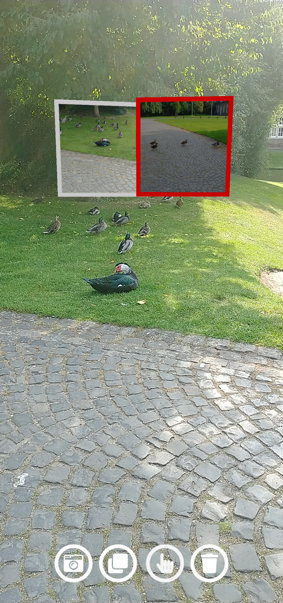
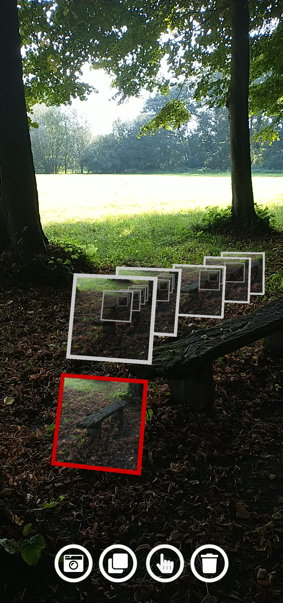
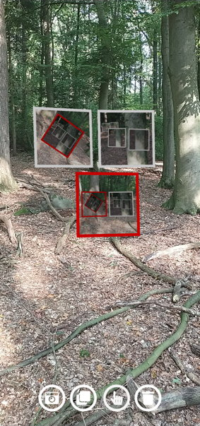
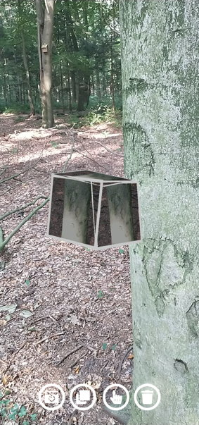

|




|
Pictception (work in progress)
AR app for Android that experiments with screenshots
Description:
This experimental Unity project is originally inspired by the app Weird Cuts.
It is based on the idea of taking screenshots of AR scenes and reuse these again as virtual elments within this scene.
During development, the app evolved to a kind of instant camera simulator.
Up to this development state, playing around with the application is quite fun.
However, there is no specific purpose for this application yet beyond entertainment.
The UI design is characterized by the experience made during former projects.
That means, the user interaction is partly implemented by direct interaction with the virtual elements, and partly by a frugal and simple button menu on the surface.
Furthermore, the project already gave me a lot of experience in the field of dynamically manipulating textures at runtime in Unity.
When taking demo images with the app, it became clear that some functions are still missing to ensure a satisfactory user experience:
Supported Platforms:
Android (ARCore support required)
Last Update:
currently in progress, not published yet
Links:
|